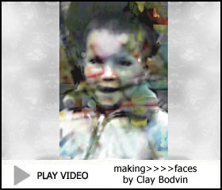

MOCA home Please wait for video to load. 10.43 MBs. Playing time: 2 1/2 minutes. Video will re-play until page is exited.Digital Video and Audio Art
making>>>>faces
The art of remembering
by Clay Bodvin

CLICK TO PLAY
"For over a decade the artist Clay Bodvin has been intent on re-inventing the still life. That focus has included an examination of the genre's history as well as, for several years now, how the painting of those so-called trivial objects interacted with portraiture.
"Bodvin's current work illuminates this connected history. Extracts from his usable past - old family photos and travel snapshots - are combined with digitally-scanned images of textiles and everyday objects. An autobiographical investigation merging with the luxurious nature of everyday things. One that transforms his intriguing remade spaces and hybrid memories into short 'home-movie' videos.
"These live-action fragments of memory (usually under three minutes) are assembled by applying a low-tech process of stop-frame animation to the artist's large stock of static imagery - moving pictures which are aptly labelled animeSTILLLIFE©. These new, creative expressions are complemented by original soundtracks which the artist describes as 'painted sound' rather than music.
"Bodvin rematerializes aspects of his own lived experience while providing richly-textured evidence that memories are both actual and artificial at the same time."
Clay Bodvin's still art at MOCA